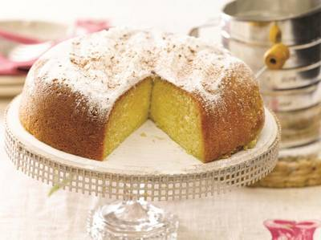

Bizcochuelo

Ingredientes:
200 gr. de harina leudante, 200 gr. de azúcar, 6 huevos, 2 cdas de aceite neutro, escencia de vainilla.
Preparación:
Separar las claras de las yemas y batirlas a punto nieve.
Incorpar el azúcar y batir hasta formar un merengue espeso.
Batir ligeramente las yemas con el aceite y la escencia.
Incorporar las yemas al merengue en forma de hilo hasta formar el punto letra.
Agregar la harina tamizada en forma de lluvia y con movimientos envolventes en 4 veces.
Enmantecar y enharinar un molde y llevar a horno a 180º por 45 minutos.